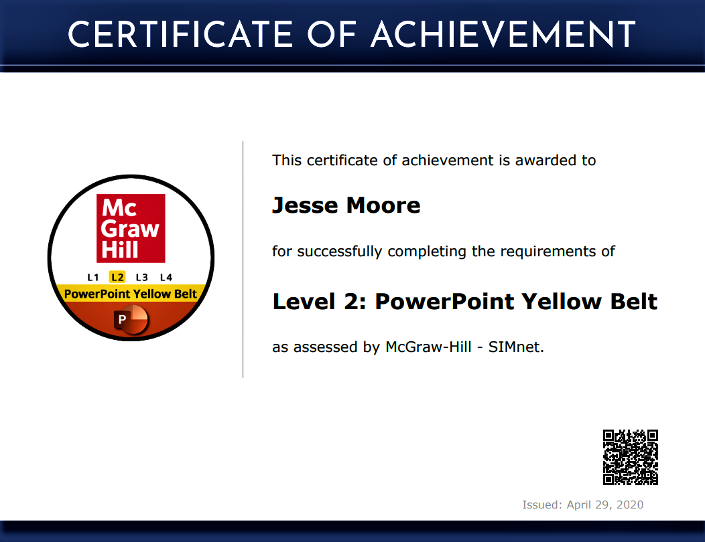
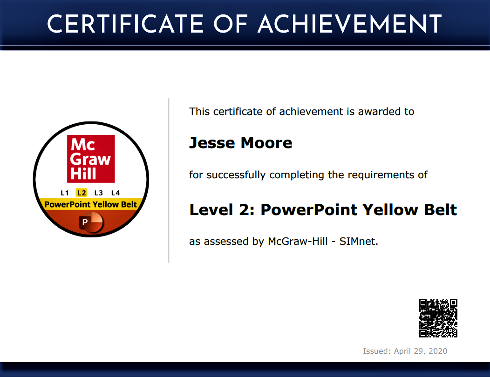

Jesse Moore
IT Professional

My name is Jesse Moore and I am a highly professional and motivated individual who excels at overcoming challenges in a team environment. I strive to bring value to a company with leadership and a positive attitude. Currently, I am attending Tarrant County College to obtain my Associate's Degree in Information Technology: Network Support. I have always had a passion for information technology and computer science, and my goal is to have a career in one of these fields. Academically, I have obtained my CompTIA ITF+ certification, and I am in the process of completing my A+. I also plan on obtaining my Network+, and CCNA while continuing my degree plan. I also have a understanding of programming with experience in front-end web design. I have obtained a developer's certification in Responsive Web Design using HTML5, CSS3, and JavaScript with 300 hours on my certification, and I have built multiple web projects. I also have experince with the programming languages Python, Javascript, and I have built multiple programs in C++. I am highly proficient in Microsoft Windows OS and have been building, troubleshooting, maintaining, repairing, and networking Windows machines since I was a child. This includes installing and upgrading hardware, clean installs and in-place upgrades of Windows OS, and windows network configuration. I have experience with Windows Server including AD DS, adding Roles and Features, managing multiple users and computers, and Remote Desktop Connections. My networking skills include building and configuring LAN's, TCP/IP protocols, IPV4/IPV6 dyanic and static configurations, and installing and configuring routers, switches, a WAP's. I am skilled in Microsoft Office with level 2 certifications in Word, Excel, Access, and PowerPoint. I have previous work experience in construction, sales, and customer service. I also have extensive experience in a logistics environment specializing in shipping/receiving, clerical, data entry, and inventory control processes.


 
